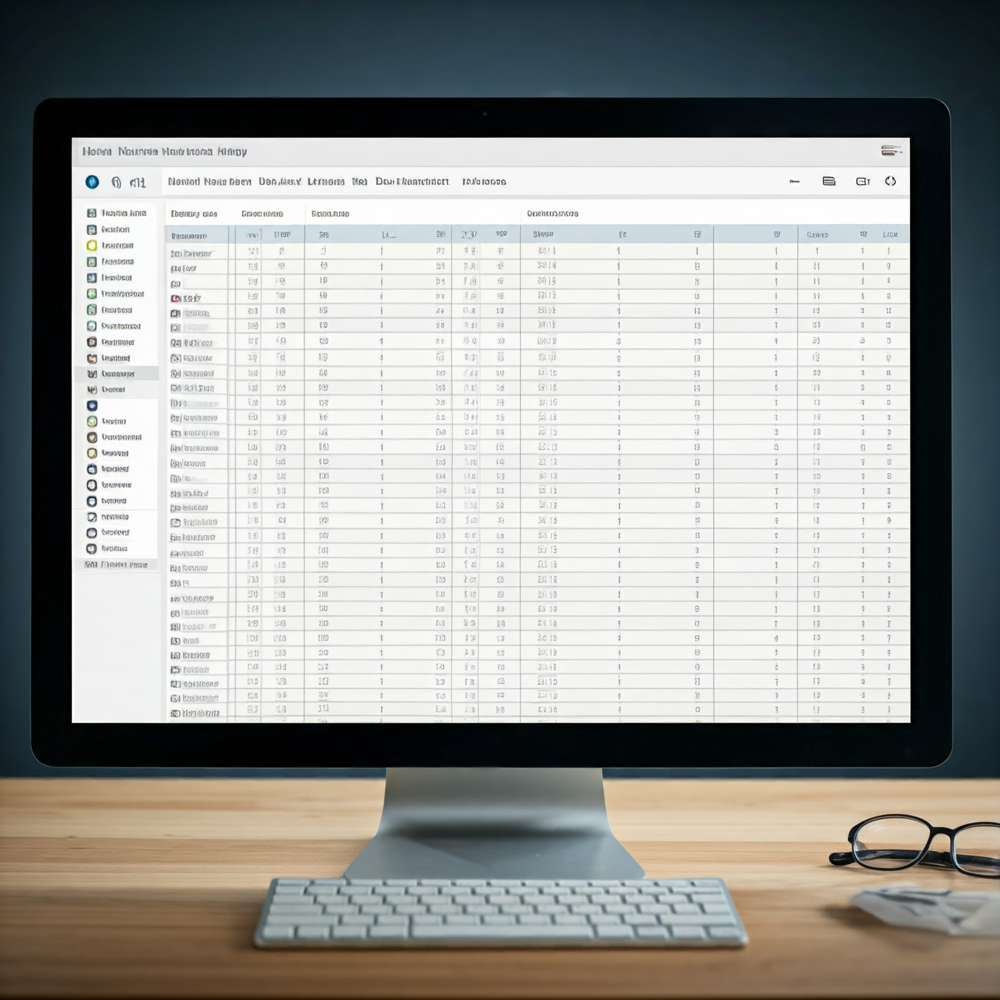

25, Apr 2024
Organizing your time as a developer
Look, we've all been there. You start your day like a fireball, coffee in hand, ready to tackle that one big project. You think, "Yeah, I'll crush this by lunchtime" But then, and you are faced with a mountain of bugs, half-written functions, Slack messages, friendly bargy-iny colleagues or a new framework you
just have to try out. Sound familiar?
Organizing your time as a developer is crucial if you want to maintain your sanity and still make progress. It doesn't matter if you're working full-time in a team or hustling as a freelancer. Time management is a universal pain point. But here's the good news: with a few simple techniques, you can keep your focus razor-sharp and make the most out of every day. In fact, you will find that time managements skills are just as crucial in your personal life as it is in your work life. Ever tried learning and practicing a musical instrument without time management? Yea, good luck with that! Hopefully, I'm going to walk you through how to do exactly that.
The struggle is real: Understanding developer time
Before we jump into practical tips, let's be real about one thing: as a developer, it's not all just writing the most beautiful code the world has ever seen; Your time is split between coding and dealing with that pesky other stuff. Meetings, emails, code reviews, and (of course) debugging can eat away your day if you are not careful. If you don't manage your time well, you'll end up working more hours without necessarily being more productive, bad for you, bad for your manager/client, bad for everyone.
Here's a typical day for an unorganized developer:
- 09:00am: Start coding after checking emails.
- 10:30am: Debugging an issue ...Opps, this just lead to a different issue.
- 12:00pm: Realize it's lunchtime, but you didn't finish what you started.
- 01:30pm: Get back to coding, but a friendly
butterfly barges in and distracts you.
- 03:00pm: Start a meeting that could've been an email, seriously .. gosh.
- 04:30pm: Back to coding, but you are now too tired to concentrate.
- 06:00pm: Wonder where your day went, maybe start daydreaming about finally starting that blog.
Sounds familiar buttercup? Of course, I'm almost certain it does!
Time blocking: The developer's best friend
If you haven't heard of time blocking, it's about scheduling chunks of time dedicated to specific tasks. Every worked with a household budget where every chunk of your paycheck is allocated to specific spendings? It's exactly like that, but with time instead of money. It's predefined each portion your daily schedule and matching each portion to a specific task. This technique is a lifesaver, believe me!
Here's how you may want to do it:
-
Morning Block (09am - 11am): Deep work. This is your time to code without distractions. Close Slack, ignore emails and just code. Tip: this is when you have the most energy, allocate this block to the complicated stuff with the most focus requirements.
-
Midday Block (11am - 01pm): Handle all the little things; emails, meetings, code reviews and pair programming session.
-
Afternoon Block (02pm - 04pm): Back to focused work, but allocated for the tasks that don't require as much focus and energy as at the start of your day.
By sticking to your time blocks, you prevent tasks from bleeding into each other and creating chaos. Keep it tight and efficient.
The pomodoro technique: Work in short bursts
I know, I know, this one's may have been mentioned a lot. But hey, it works. The Pomodoro Technique is a time management method that breaks your work into 25min intervals (called "Pomodoros"), with 5-minute breaks in between. After four Pomodoros, you take a longer break (15-30mins). The beauty of this system is it helps maintain focus without burnout.
Here's why Pomodoro works great for developers: it forces you to actually rest your mind and eyes which is something we are notorious for neglecting. It also assists in zero-focusing on just the one task, rather than juggling multiple things at the same time as you
know you only have a limited timeframe.
The goal is to rest, prevent distractions and keep your focus sharp. But don't go all robotic about it, be 25min is a flexible range and the 5min break is also flexibility. In my experience, the most important thing is going into this limited time frame with only
one task in mind.

Task prioritization: Do the important stuff first
Not all tasks are created equal. Some are urgent, some are not, and some you should have probably handed off to someone else weeks ago (aah, the magic of delegation). One of the biggest mistakes we make is doing tasks in the order they come in, rather than prioritizing them.
Here's the thing: **just because something feels urgent, doesn't mean it is**. Use something like the Eisenhower Matrix (fancy name for a 2x2 grid, I know) to categorize tasks based on urgency and importance. Here's how it works:
-
Important - Urgent: Do these now.
-
Important - Not Urgent: Schedule these.
-
Not Important - Urgent: Delegate these if possible.
-
Not Important - Not Urgent: Delete or postpone these.
It might sound a bit formal, but this will save you from spending time on things that don't really move the needle. Actually, you just may be surprised how many things fall into the latter two slots. Tip: See first if you can categorize tasks as *"Not Important - Not Urgent"*, if not this the priority above ... and so on
Minimize Context Switching
One of the biggest productivity killers for developers is context switching. It's the process of jumping from one task to another, like switching between debugging, coding, and answering emails. This takes a toll on your brain because every time you switch, it takes a few minutes to refocus.
Here's an example: you're deep in a coding session, and then you get a Slack notification about a bug that needs fixing. You stop what you're doing, fix the bug, and then try to get back to coding. But it takes you a solid 10-15 minutes to get back into the same mental state you were in before.
The solution?
Batch similar tasks together. If you need to do bug fixes, do them in one block of time. If you need to write new features, do that in a separate block. Don't mix different tasks together and
DO NOT allow other tasks or distractions to bleed into each other's time.
Use tools for task management
There's no shortage of tools to help you organize your time and tasks. Any of the many available kanban board software can be a game changer. Personally, I like using Jira for managing my freelance gigs because it's simple, visual, and easy to use. Or if you are so inclined, a physical kanban board may work just as good as digital ones.
Here's how you can visualize your tasks using a kanban board:
-
To Do: Write the new API for the e-commerce project.
-
In Progress: Fix bug in the payment system.
-
In Review: Review the bug fix and verify with stakeholders.
-
Failed Review: The fix is not implemented properly.
-
Done / Passed Review: The bug is fixed and passed all tests.
By organizing tasks visually, it's easy to see where you stand and what needs attention.
Keep learning: but don't overwhelm yourself, make it part of the job
As a developer, learning is part of your work. New frameworks, languages, and tools pop up all the time. It's easy to get lost in tutorials or documentation rabbit holes. Schedule time to learn new things, but don't let it eat up all your productive hours. Make sure to dedicate a time block every week,
during business hours dedicated towards developing your knowledge and learning.
So next time you sit down at your desk, map out your day, block off distractions, and start smashing through tasks like a pro. And remember: planning ahead is almost always the best thing to do for your time and mental health when it comes to what may seem overwhelming at first.
Wierd Tip: Leave room in your plan for the
unplanned, a flexible time slot which allows for the unforeseen to jump into your life without disrupting the entire day or even week's schedule.